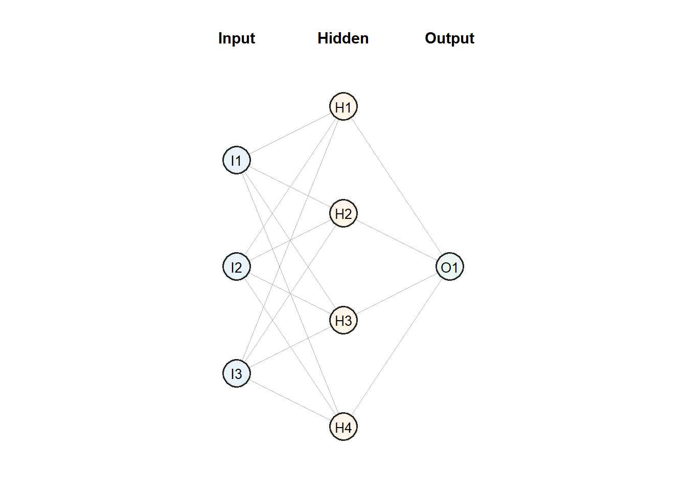

3 Layering Bricks
A single perceptron is limited to one linear boundary with which is can make classifications. This appears to leave us in a similar predicament to when we were isolated to either the hard or soft margin classifier in SVMs; only good for classes that have a linearly separable. Here, we transformed our feature space to induce nonlinear boundaries in the original space, leveraging the kernel trick to make this process efficient. For a perceptron (a neuron more generally), we can use a similar idea to create a nonlinear boundary where we combine multiple neurons into layers. This gives rise to a multilayer perceptron, or MLP.
3.1 The Multilayer Perceptron
Consider the XOR classification problem illustrated by Figure 2.6. The problem is not linearly separable so we need to consider a nonlinear boundary in the \([x_1, x_2]\) space. Under the SVM framework, we need to enrich the feature space by considering a linear boundary in the transformed space \(\phi(\mathbf{x})\). Therefore, \[ \hat{y} = \begin{cases} 1\qquad \mathbf{w}\cdot\phi(\mathbf{x}) + b > 0, \\ 0\qquad \text{otherwise.} \end{cases} \]
We can extend this idea to the perceptron. Instead of the perceptron input considering \(\mathbf{x}\), we can input the transformed predictors \(\phi(\mathbf{x})\) such that \[ \hat{y} = \sigma(\mathbf{w}\cdot\phi(\mathbf{x}) + b). \] The only question that remains: How do we choose \(\phi\)?
Under the SVM case, we needed to either manually define \(\phi\) and construct the new feature space, or choose a kernel to incorporate a nonlinear boundary.
For the perceptron case, we could manually define \(\phi\), or
we can have a set of neurons which learn the required transformation automatically.
This is the idea of a multilayer perceptron.
3.1.1 The Structure
A basic MLP, or feed-forward neural network, has the following three components:
- an input layer, which holds the predictors
- one or more hidden layers, which construct intermediate features
- an output layer, which combines those features into the final prediction
Therefore, a feed-forward neural network is just a combination of neurons. By combining the neurons in layers, and combining multiple layers, we can create a nonlinear structure in the model.
Obviously, we have considered the networks from a binary classification perspective with perceptrons; but, the idea is general for any type of problem.
The term hidden simply means that the units are not directly observed as variables in the dataset and are not the final response. They are internal values created by the network to enhance the feature space with the goal of improving model performance. Therefore, in Figure 3.1, the hidden layer maps the original input vector \(\mathbf{x}\) to a vector of hidden layer outputs such that
\[ \mathbf{x} \mapsto \mathbf{a}^{(1)} = \begin{bmatrix} a_1\\ a_2\\ \vdots\\ a_M \end{bmatrix}, \] where \(M\) is the number of nodes in the hidden layer. For each hidden node \(a_m\), we still have a linear transformation defined by \(\mathbf{w}_m\) and \(b\). This has the potential to be very notationally tedious. As a result, it is common to create an associated weight matrix and bias vector such that
\[ \mathbf{z}^{(1)} = W^{(1)}\mathbf{x} + \mathbf{b}^{(1)}, \]
where
\[ W^{(1)} = \begin{bmatrix} - & \mathbf{w}_1^\top & - \\ - & \mathbf{w}_2^\top & - \\ & \vdots & \\ - & \mathbf{w}_M^\top & - \end{bmatrix}, \qquad \mathbf{b}^{(1)} = \begin{bmatrix} b_1\\ b_2\\ \vdots\\ b_M \end{bmatrix}. \]
Therefore \[\begin{align*} \mathbf{a}^{(1)} & =\sigma\left(\mathbf{z}^{(1)}\right) \\ & = \sigma\left(W^{(1)}\mathbf{x} + \mathbf{b}^{(1)}\right), \end{align*}\]
where \(\sigma\) is applied component-wise.
The model output then takes these hidden nodes as the input into a final neuron (possibly multiple depending on the response) such that
\[ \hat{y} = \sigma^{\text{out}}(\mathbf{W}^{(\text{out})}\mathbf{a}^{(1)} + \mathbf{b}^{(\text{out})}), \] where we have an output-specific: activation function, weight matrix, and bias vector.
The flow described for an observation displays the idea of FFNN;
learn a feature transformation, then fit the final prediction rule in that learned feature space.
The idea that remains slightly elusive is that of letting the neural network learn the transformation. This is a powerful feature which We will cover later on.
3.1.2 Continuing XOR
The XOR example lets us make the feature-map idea concrete. In the SVM view, we would search for, or implicitly choose, a transformation \(\phi(\mathbf{x})\) so that a linear score separates the classes in the transformed space. In the MLP view, the hidden layer can play the same role.
For example, take \(\mathbf{x} = [x_1, x_2]^\top\) and define a hidden layer with four ReLU units:
\[ \mathbf{a}^{(1)} = \operatorname{ReLU}\left(W^{(1)}\mathbf{x} + \mathbf{b}^{(1)}\right), \qquad W^{(1)} = \begin{bmatrix} 1 & 1\\ -1 & -1\\ 1 & -1\\ -1 & 1 \end{bmatrix}, \qquad \mathbf{b}^{(1)} = \begin{bmatrix} 0\\ 0\\ 0\\ 0 \end{bmatrix}. \]
This gives the hidden activations
\[ \begin{aligned} a_1 &= \operatorname{ReLU}(x_1 + x_2) = \max(0, x_1+x_2),\\ a_2 &= \operatorname{ReLU}(-x_1 - x_2) = \max(0, -x_1-x_2),\\ a_3 &= \operatorname{ReLU}(x_1 - x_2) = \max(0, x_1-x_2),\\ a_4 &= \operatorname{ReLU}(-x_1 + x_2)= \max(0, -x_1+x_2). \end{aligned} \]
These four values are the transformed features. That is, we can think of a transformed feature space
\[ \phi(\mathbf{x}) = \mathbf{a}^{(1)} = \begin{bmatrix} a_1\\ a_2\\ a_3\\ a_4 \end{bmatrix}. \]
The output layer can then fit a linear score in this hidden feature space:
\[ s = \begin{bmatrix} 1 & 1 & -1 & -1 \end{bmatrix} \mathbf{a}^{(1)} + 0 = a_1 + a_2 - a_3 - a_4. \]
Classifying with a step function on whether \(s\) is positive or negative gives a nonlinear boundary in the original \([x_1, x_2]\) space. Since \(a_1+a_2 = |x_1+x_2|\) and \(a_3+a_4 = |x_1-x_2|\), the score is positive when the two inputs have the same sign and negative when they have opposite signs. Therefore, the hidden layer has changed what the predictors are to the output layer, allowing a linear boundary on these hidden nodes.
Note that, this is still a manual example. It illustrates what an MLP structure can represent, not necessarily how the weights and biases are found. In reality, we fit a neural network whereby: \(\mathbf{W}^{(1)}\), \(\mathbf{b}^{(1)}\), \(\mathbf{W}^{(\text{out})}\), and \(\mathbf{b}^{(\text{out})}\) are estimated from data.
The learning problem is therefore different from the SVM feature-map problem: instead of choosing \(\phi\) before fitting the decision rule, the network tries to learn a useful \(\phi\) while learning the decision rule.
3.1.2.1 Learning the feature transformation
Unlike SVMs, we do not manually choose to introduce the predictors \(x_1^2\), \(x_1x_2\), or other transformations; in fact, we have little oversight on the transformation function \(\phi\). The network adjusts the hidden-layer weights and biases so that the resulting activations become useful for the prediction task, learning how to represent the inputs which improved the performance of the model. However, this representation depends on many factors such as model size, activation functions, optimisation, starting weights, and the information present in the data.
3.1.3 Adding More Layers
Once we have one hidden layer, adding more layers extends the same idea. The output of one hidden layer becomes the input to the next hidden layer:
\[ \mathbf{x} \mapsto \mathbf{a}^{(1)} \mapsto \mathbf{a}^{(2)} \mapsto \cdots \mapsto \hat{y}. \]
This is why an MLP is not just a collection of unrelated perceptrons. It is a sequence of feature transformations. The first hidden layer constructs features from the original predictors. The next hidden layer constructs features from those features, and so on. Additional layers can make a network more flexible, but they also make optimisation harder. We will return to optimisation as a whole when we discuss gradient descent and backpropagation.
3.2 Choosing The Output Layer
Once the hidden layers have created the final representation, the output layer decides how that representation should be interpreted. If we denote the final hidden output as \(\mathbf{a}^{(L)}\), then a single output node starts with the familiar weighted sum
\[ z^{(\text{out})} = \mathbf{W}^{(\text{out})}\cdot \mathbf{a}^{(L)} + b^{(\text{out})}. \]
The task then determines the output activation. For regression with one numeric response, it is common to use a linear activation:
\[ \hat{y} = z^{(\text{out})}. \]
In this case, the output layer is fitting a linear regression model on the learned features \(\mathbf{a}^{(L)}\). The difference from ordinary linear regression is that the features themselves have been created by the hidden layers. This output is usually paired with a squared-error loss.
For binary classification, one output unit with a sigmoid activation is common:
\[ \hat{p} = \frac{1}{1 + \exp\left(-z^{(\text{out})}\right)}. \]
Here, the output layer is fitting the logistic-regression form on the learned features \(\mathbf{a}^{(L)}\). The sigmoid converts the score into an estimated probability, and the model is usually fitted with binary cross-entropy.
For multiclass classification with \(K\) classes, we use one output score per class:
\[ z_k^{(\text{out})} = \mathbf{w}_k^{(\text{out})}\cdot \mathbf{a}^{(L)} + b_k^{(\text{out})}, \qquad k = 1,\ldots,K. \]
The softmax activation then converts these scores into class probabilities:
\[ \hat{p}_k = \frac{\exp\left(z_k^{(\text{out})}\right)} {\sum_{\ell=1}^K \exp\left(z_\ell^{(\text{out})}\right)}. \]
The prediction is the class with the largest estimated probability, and the usual loss is multiclass cross-entropy.
The common idea across these cases is that the hidden layers learn the feature space, while the output layer chooses the prediction / decision rule that aims to match the response.
Therefore, a multilayer perceptron or feed-forward neural network separates the problem into two chronological steps:
- hidden layers transform the predictors into a learned feature space
- the output layer fits the prediction rule in that feature space
This is why neural networks are often described as flexible function approximators. They are not just fitting one boundary in the original predictor space. They are learning a feature transformation that makes the final prediction easier for the output layer. Each node and each layer combine to learn important features about the original predictors. In fact, this leads us into the main theorem for neural networks.
3.3 The Universal Approximation Theorem
The following theorem ensures that a neural network structure can learn. Obviously, there is a very formal statement of this theorem by Hornik (1991), but we will paraphrase.
A neural network with at least one hidden layer and a suitable nonlinear activation function can approximate any continuous function on a closed, bounded domain to an arbitrary preceision, provided that the hidden layer has enough nodes.
Suppose that we have a predictor space \(\mathbf{X} \in \mathbb{R}^p\) and an associated response variable \(\mathbf{Y}\). By linking the two, we are essentially assuming that there exists some function
\[ f: K \rightarrow \mathbb{R}, \qquad K \subset \mathbb{R}^p \;\; \text{ compact} \] such that
\[ Y = f(X) + \epsilon, \]
Here, \(\epsilon\) represents the statistical noise.
The Universal Approximation Theorem says that a neural network with only one hidden layer can approximate that function \(f\) as long as that layer has enough nodes.
This links directly to the feature space transformation idea above. The hidden layer builds nonlinear transformations of \(\mathbf{x}\), and the output layer combines these transformed features. By combining enough simple nonlinear units, the network can represent any continuous function which links the predictors and the response.
That said, the theorem does not guarantee that a fitted neural network will perform well. It says that a suitable network exists without ensuring that the optimisation will always find such a network. Therefore, the theorem gives us confidence in the flexibility of neural networks, but it does not remove the modelling work. We still need to choose an architecture, fit the weights, tune the model, and check performance on out-of-sample data.
Clearly, the next question is: given a model architecture, how the weights are optimised?